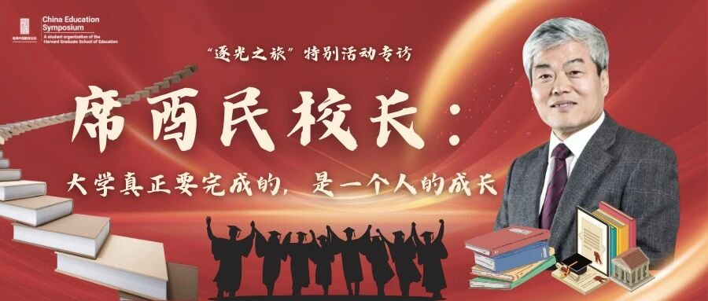
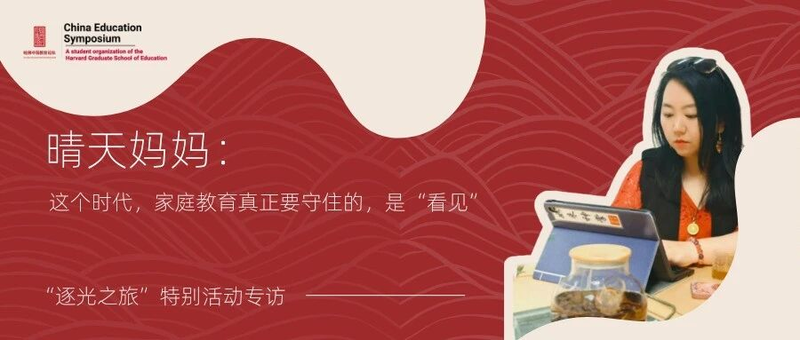

2026哈佛中国教育论坛是一年一度的教育领域高端对话平台，我作为线上访谈栏目的主创成员， 从栏目策划、嘉宾邀约到内容执行全程参与，负责从0到1搭建线上访谈内容体系， 并成功邀请多位教育领域知名学者和行业代表人物参与深度对话。
参与线上访谈栏目整体策划，独立撰写传播方向、采访方向等核心文档。 围绕嘉宾经历、社会议题和受众兴趣设计选题切口，提升栏目内容的故事性与传播性。 每一次选题都经过对嘉宾背景的深度研究和对目标受众需求的精准判断。
独立完成嘉宾前期调研、采访问题设计、线上访谈执行和后期文案撰写。 擅长从人物经历中提炼可读性强、有情绪记忆点的内容表达， 让严肃的学术对话也能打动普通读者。
聚焦教育领域知名学者及行业代表人物，完成从定向筛选、邀约沟通到合作推进的全流程对接。 成功邀请西交利物浦大学执行校长等重量级嘉宾参与线上访谈， 展现了出色的沟通能力和资源整合能力。
在完成访谈合作基础上，进一步挖掘嘉宾资源价值，推动受访嘉宾参与其他论坛活动， 提升内容资源复用效率与项目协同性。实现了"一次合作、多次利用"的资源最大化策略。
以下访谈发布于「Harvard CES」公众号「逐光之旅：时代见证者」特别活动专访栏目，我担任采访记者与文案，点击卡片可跳转阅读原文：

逐光之旅 · 专访 01与西交利物浦大学执行校长席酉民教授深度对谈：从中外合作办学"重新定义大学"，到"唤醒、点燃、支持、熏陶"的育人逻辑，探讨 AI 时代教育如何让年轻人从"被安排的人"成长为"有能力为自己做选择的人"。

逐光之旅 · 专访 02与亲职帮创始人、福布斯中国 50 大 KOL 晴天妈妈对谈家庭教育：从家庭焦虑、学习内驱力到技术时代的亲子"在场"，回到教育最根本的命题——不是塑造，而是唤醒。
＊ 栏目策划文档等内部材料因保密要求不作为作品展示
参与哈佛中国教育论坛的经历让我深刻理解了"内容即策略"的含义。 一个好的栏目不是简单的问答，而是需要在对嘉宾的深度理解、对受众需求的精准把握、 对传播时机的敏锐判断之间找到平衡点。这种能力同样适用于游戏品牌的内容营销—— 理解产品、理解用户、理解平台，三者缺一不可。